Original supplied board — 1600 × 1000
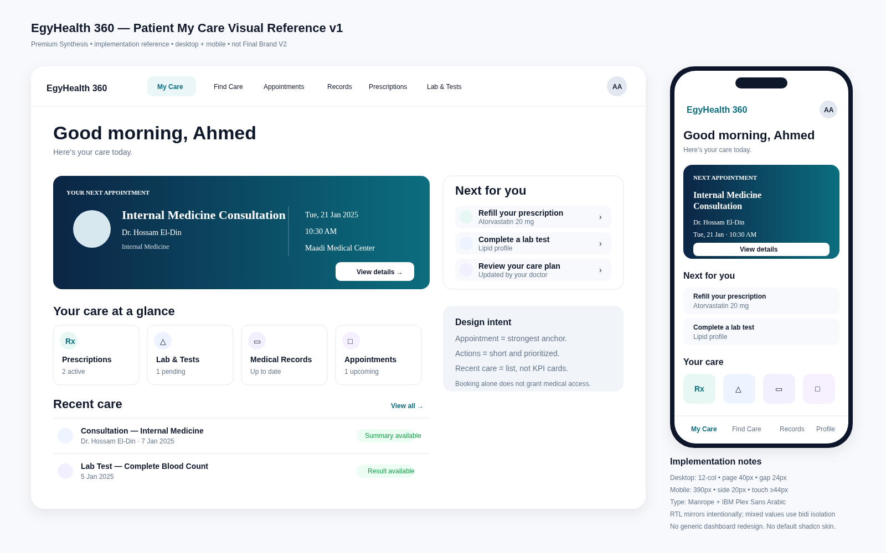
Matched reference-window captures
Reference desktop window / 1110 × 800
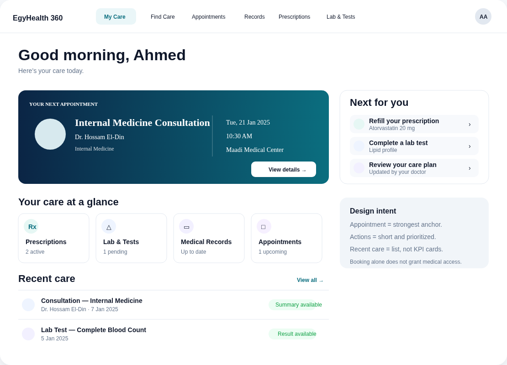
Implementation / 1110 × 800
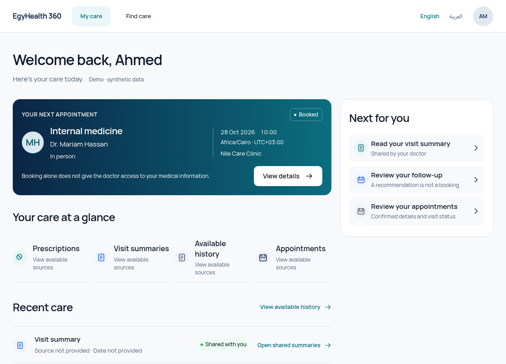
Required desktop views / 1600 × 1000
English
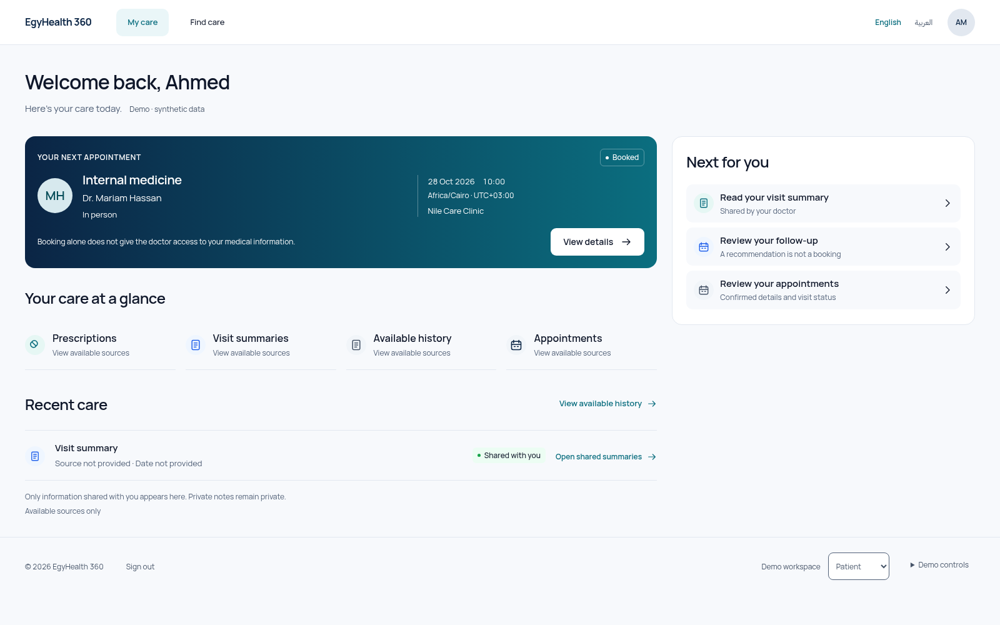
Arabic RTL
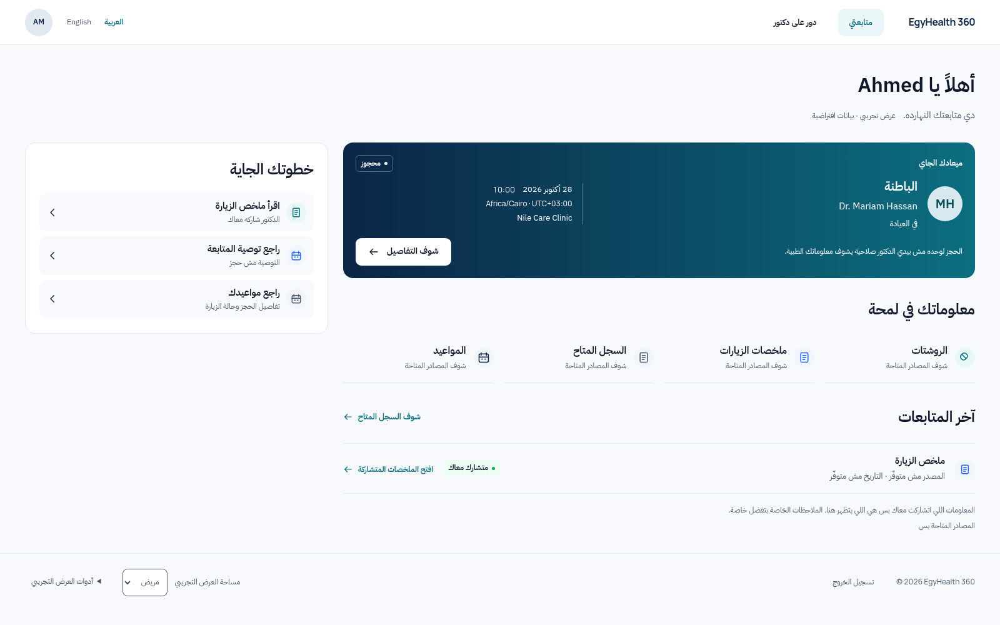
Required mobile views / 390 × 844
English
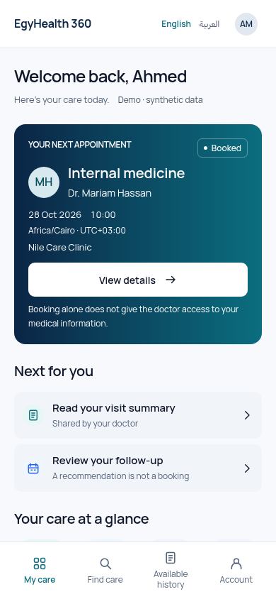
Arabic RTL
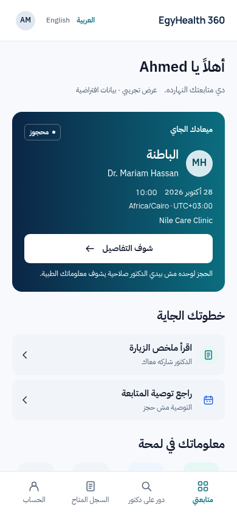
Additional 314px reference-window, 200% text, focus, loading/empty/error/source-verification and controlled Live captures are in the adjacent files. Full-page reading exports move sticky navigation to the footer; matched viewport images retain actual navigation.
Before / after — EN
Reviewed implementation / 1600 × 1000
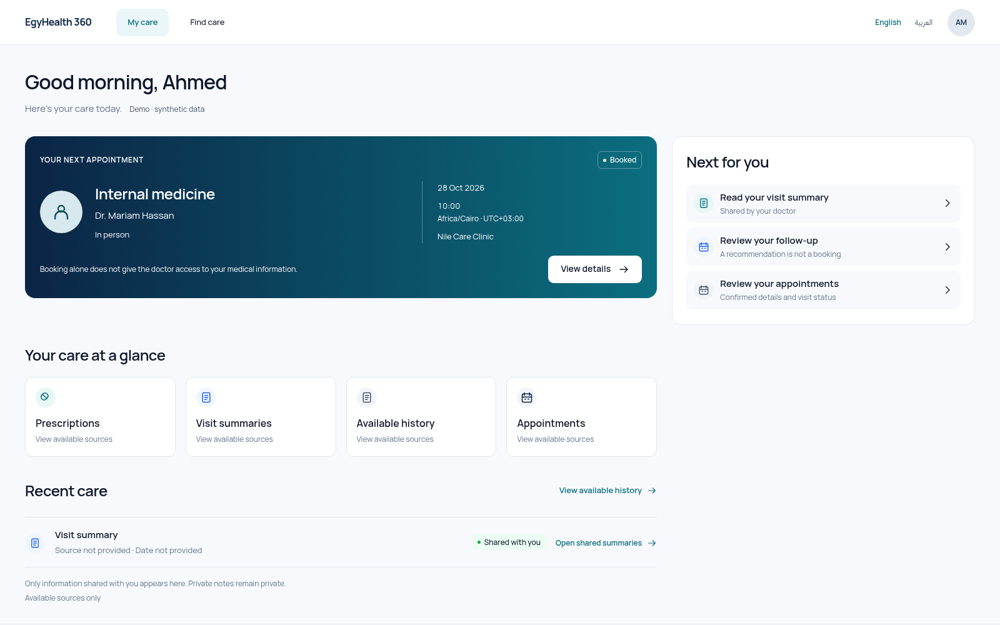
Refined / 1600 × 1000
Reviewed implementation / 390 × 844
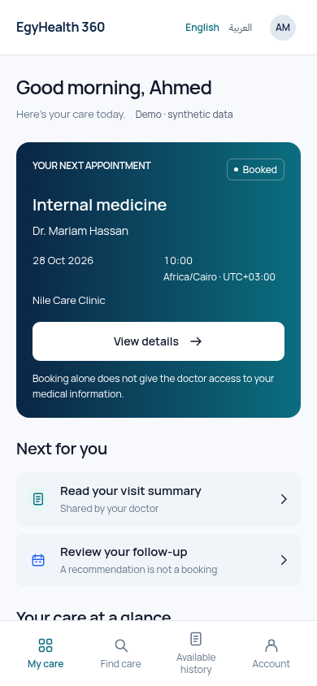
Refined / 390 × 844
Before / after — AR
Reviewed implementation / 1600 × 1000
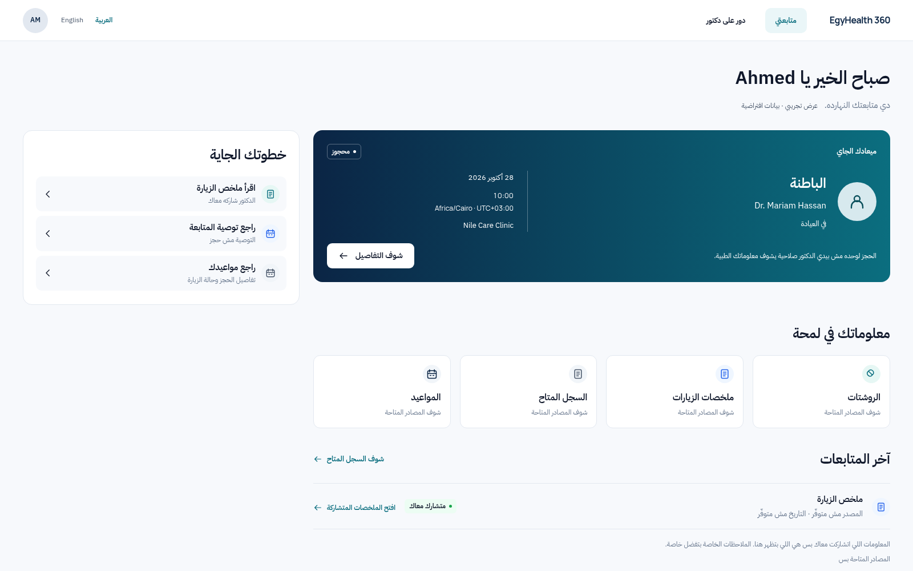
Refined / 1600 × 1000
Reviewed implementation / 390 × 844
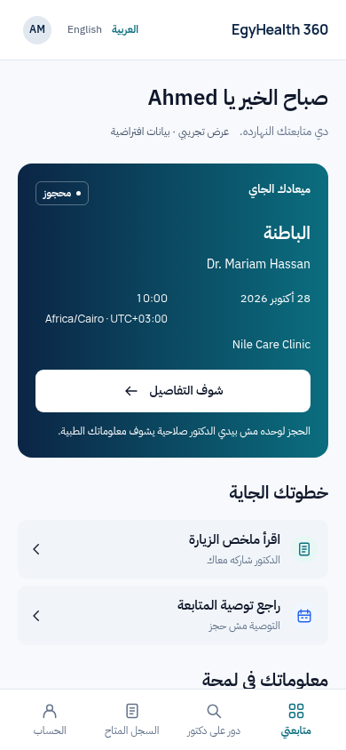
Refined / 390 × 844